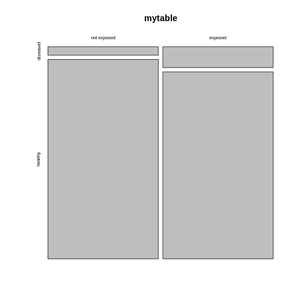
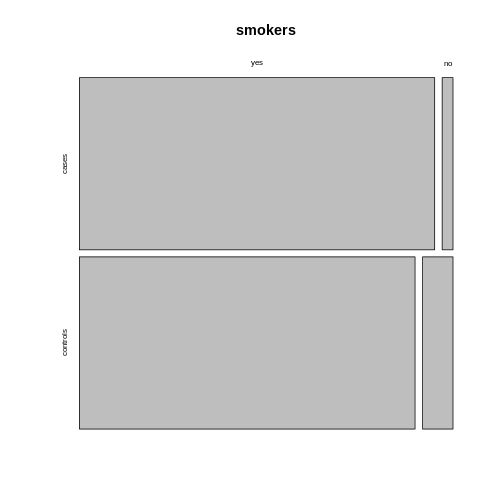

Visualizing categorical data
Last updated on 2023-11-21 | Edit this page
Estimated time 10 minutes
Overview
Questions
- How can I visualize categorical data in R?
Objectives
- Learn to make a mosaic plot in base R and using
ggplot2.
R
mytable <- rbind(c(4,96), c(10,90))
rownames(mytable) <- c("not exposed","exposed")
colnames(mytable) <- c("diseased", "healthy")
You now know how to calculate a measure for association from your table - great! But so far, we’ve only looked at numbers, and you’ve also learned that you should also visualize your data. Yes, even if it’s only 4 data points!
Using base R
There is a very simple way to do this using base R:
R
mosaicplot(mytable)
 The mosaic plot consists of rectangles representing the contingency table’s cells. The areas of the rectangles are proportional to the respective cells’ count, making it easier for the human eye to compare the proportions.
Note that the above mosaicplot is arranged such that the rectangles of one column are neatly stacked on top of each other. At the same time, it has flipped the table such that the rows of our matrix have become the columns and vice versa.
This might not always be how you want your plot to look. For example, consider the smokers example from the previous episode:
R
smokers <- rbind(
c(688, 650),
c(21, 59)
)
rownames(smokers) <- c("yes", "no")
colnames(smokers) <- c("cases", "controls")
If we apply the mosaicplot here, it’ll look like
this:
R
mosaicplot(smokers)
Using the argument sort, you can determine how the
rectangles are aligned. You can align them by rows as follows:
R
mosaicplot(smokers,
sort = c(2,1))
 Alternatively, you can run the plotting function on the transposed contingency table:
R
mosaicplot(t(smokers))
Using the ggplot2
We recommend using the tidyverse for data analysis in
general, and in particular ggplot2 for plotting. The above
function is perfect for getting a quick overview on the data. For
creating high-quality, customized graphics, ggplot2 is
usually the better choice.
This gives us a great opportunity to talk about tidy data: In a tidy table
- each variable is a column and
- each observation is a row.
It would have three columns, according to the variables:
exposure (exposed or not), outcome (diseased
or healthy), and count.
Let’s code up the table in tidy format:
R
mice <- data.frame(
exposure = c("yes", "yes", "no", "no"),
outcome = c("diseased", "healthy", "diseased", "healthy"),
count = c(10, 90, 4, 96)
)
mice
OUTPUT
exposure outcome count
1 yes diseased 10
2 yes healthy 90
3 no diseased 4
4 no healthy 96This tidy table can be the input for the ggplot
function. There are multiple ways and possible designs for mosaic plots
using ggplot2. We’ll demonstrate one here:
R
library(tidyverse)
mice %>%
group_by(exposure) %>%
mutate(sumcount = sum(count)) %>%
ggplot(aes(x=exposure, y = count, fill=outcome, width=sumcount)) +
geom_bar(stat="identity", position = "fill") +
facet_grid(~exposure, scales = "free_x", space = "free_x")+
theme_void()
The above code is borrowed from this post.